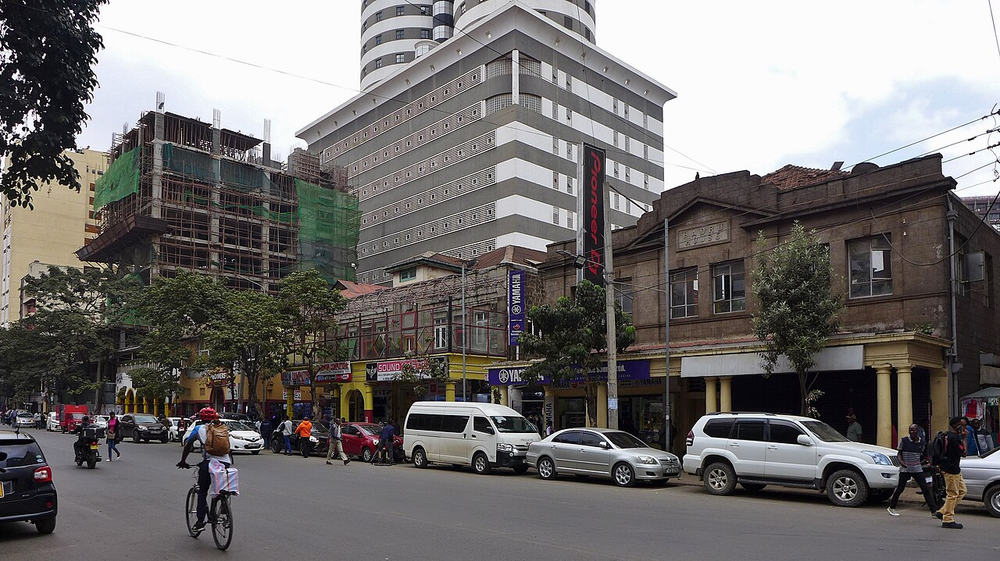

नैरोबी में रात में तोड़फोड़ के दौरान मोई एवेन्यू की इमारत ढही, चार घायल
जिस इमारत में कभी क्लब एवेनिडा था, वह शुक्रवार रात मध्य नैरोबी के मोई एवेन्यू पर गिराने का काम चलते समय ढह गई। काउंटी अधिकारी ने चार लोगों के घायल होने की पुष्टि की और मंज़ूरियों, निगरानी व सुरक्षा मानकों की जांच की मांग की।

मुख्य बिंदु
- नैरोबी। नैरोबी के मध्य में मोई एवेन्यू पर एक इमारत शुक्रवार रात, 16 अक्टूबर 2026 को ढह गई, जब उसे गिराने का काम चल रहा था। चार लोग घायल हुए, नैरोबी काउंटी के एक अधिकारी ने कहा।
- इस इमारत में कभी क्लब एवेनिडा था, जो शहर के केंद्र की सबसे व्यस्त सड़कों में से एक पर स्थित एक जाना माना नाइट स्पॉट था। यह यूनियन टावर्स के बगल में, मंगेरेज़ा डीटी सैको इमारत के सामने खड़ी थी।
- नैरोबी सिटी काउंटी के नागरिक सहभागिता और ग्राहक सेवा प्रमुख अधिकारी जेफ्री मोसिरिया ने शनिवार, 17 अक्टूबर 2026 की तड़के X पर पोस्ट किए गए एक बयान में ढहने की पुष्टि की। उन्होंने घायलों की संख्या…
नैरोबी। नैरोबी के मध्य में मोई एवेन्यू पर एक इमारत शुक्रवार रात, 16 अक्टूबर 2026 को ढह गई, जब उसे गिराने का काम चल रहा था। चार लोग घायल हुए, नैरोबी काउंटी के एक अधिकारी ने कहा।
इस इमारत में कभी क्लब एवेनिडा था, जो शहर के केंद्र की सबसे व्यस्त सड़कों में से एक पर स्थित एक जाना माना नाइट स्पॉट था। यह यूनियन टावर्स के बगल में, मंगेरेज़ा डीटी सैको इमारत के सामने खड़ी थी।
काउंटी क्या कहती है
नैरोबी सिटी काउंटी के नागरिक सहभागिता और ग्राहक सेवा प्रमुख अधिकारी जेफ्री मोसिरिया ने शनिवार, 17 अक्टूबर 2026 की तड़के X पर पोस्ट किए गए एक बयान में ढहने की पुष्टि की। उन्होंने घायलों की संख्या चार बताई। उनके बयान में कोई नाम नहीं दिया गया और न ही यह बताया गया कि चारों को कितनी गंभीर चोटें आईं।
मोसिरिया ने कहा कि देर रात का समय होने से संभवतः जानें बच गईं। मोई एवेन्यू पर दिन में पैदल चलने वालों और वाहनों की भारी भीड़ रहती है। रात में सड़क खाली थी और इमारत गिरने के समय आसपास कम लोग थे।
स्थानीय रिपोर्टों में कहा गया कि घायलों को अस्पताल ले जाया गया। घटनास्थल से आई शुरुआती रिपोर्टों ने मलबे के नीचे लोगों के फंसे होने की आशंका पैदा की, और पुलिस व आपातकालीन दल मौके पर पहुंचे। काउंटी के बयान में चार घायलों को ही रिपोर्ट किए गए पीड़ितों के रूप में गिनाया गया और किसी के फंसे होने की पुष्टि नहीं की गई।
तोड़फोड़ पर सवाल
मोसिरिया ने पूरी जांच की मांग की। उन्होंने काउंटी इंजीनियरों से यह पता लगाने को कहा कि ढांचा क्यों गिरा और क्या तोड़फोड़ में तय सुरक्षा मानकों का पालन हुआ था।
उनके बयान में जांचकर्ताओं के लिए तीन खास बिंदु उठाए गए: क्या योग्य विशेषज्ञों ने काम की निगरानी की, क्या तोड़फोड़ के लिए ज़रूरी सभी मंज़ूरियां थीं, और क्या मौके पर सुरक्षा नियमों का पालन हुआ।
इलाके से आई रिपोर्टों में कहा गया कि इमारत को हाल के दिनों में गिराने के लिए चिह्नित किया गया था। शुक्रवार रात ऑनलाइन साझा की गई तस्वीरों और वीडियो में सड़क पर मलबे के ढेर, रोशनी चमकाते आपातकालीन वाहन और लोगों को दूर रखते अधिकारी दिखे। जनता से दूर रहने को कहा गया ताकि बचाव दल काम कर सकें।
शहर के केंद्र की एक मुख्य सड़क
मोई एवेन्यू नैरोबी के केंद्रीय व्यापारिक जिले के बीच से गुजरती है, दुकानों, दफ्तरों, होटलों और व्यस्त बस स्टॉप के पास से। दिन के समय वहां ढहने से कहीं ज़्यादा लोग खतरे में पड़ते।
जिले में तोड़फोड़ का काम अक्सर रात में किया जाता है ताकि ट्रैफिक और व्यापार में कम रुकावट आए। शुक्रवार के ढहने से यह सवाल और तेज़ होने की संभावना है कि खुली सड़कों और भरी हुई इमारतों के बगल में ऐसा काम किस तरह योजनाबद्ध और निगरानी में किया जाता है।
शनिवार सुबह तक काउंटी अधिकारियों ने घायलों के नाम या किसी पहली जांच के नतीजे जारी नहीं किए थे। काउंटी अपनी जांच के नतीजे प्रकाशित करेगी तो The Orbit Post इस खबर को अपडेट करेगा।
टाइमलाइन
- Oct 16, 2026जिस इमारत में कभी क्लब एवेनिडा था, वह रात में तोड़फोड़ के काम के दौरान मध्य नैरोबी के मोई एवेन्यू पर ढह गई। पुलिस और आपातकालीन दल मौके पर पहुंचे।
- Oct 17, 2026काउंटी अधिकारी जेफ्री मोसिरिया ने चार लोगों के घायल होने की पुष्टि की और काउंटी इंजीनियरों से कारण, मंज़ूरियों और अपनाए गए सुरक्षा मानकों की जांच करने को कहा।
स्रोत
- People Daily: Building that housed Nairobi's Club Avenida collapses during demolition
- Radio Generation: Four injured as former club Avenida building crumbles during demolition
- Hivileo: Building collapses along Moi Avenue during night-time demolition
- Nairobi Xclusive: Four injured as building collapses during night demolition in Nairobi CBD